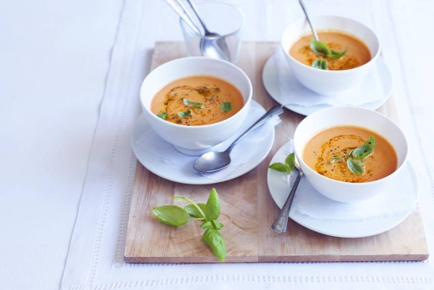

Italiaanse tomatensoep
Heerlijk romige tomatensoep met mascarpone!
Ingrediënten
- 1 ui
- 2 tenen knoflook
- 3 el traditionele oflijfolie
- 1½ kg romatomaat
- 70 g tomatenpuree (blikje)
- 3 kippenbouillontabletten
- 1 liter kraanwater
- 250 g mascarpone
- 100 g verse rode pesto
- 15 g verse basilicum
Bereidingswijze
- Snipper de ui en snijd de knoflook fijn. Verhit de olie in een grote soeppan. Fruit de ui en knoflook ca. 2 min.
zachtjes. Snijd de tomaten in blokjes. Voeg ze met de tomatenpuree toe en laat alles ca. 5 min. zachtjes smoren.
- Verkruimel de bouillontabletten erboven en voeg het water toe. Breng het aan de kook en laat ca. 10 min. zachtjes
koken. Roer de mascarpone erdoor. Pureer het met de staafmixer tot een gladde soep. Schenk het boven een andere pan
door een zeef. Roer de helft van de pesto erdoor en warm al roerend ca. 2-3 min. zachtjes mee.
- Breng de soep op smaak met peper. Snijd het basilicum in reepjes. Verdeel over de kommen. Voeg de rest van
de pesto toe en en strooi het basilicum erover.

Tip: Ook heerlijk met stukken uienbrood.